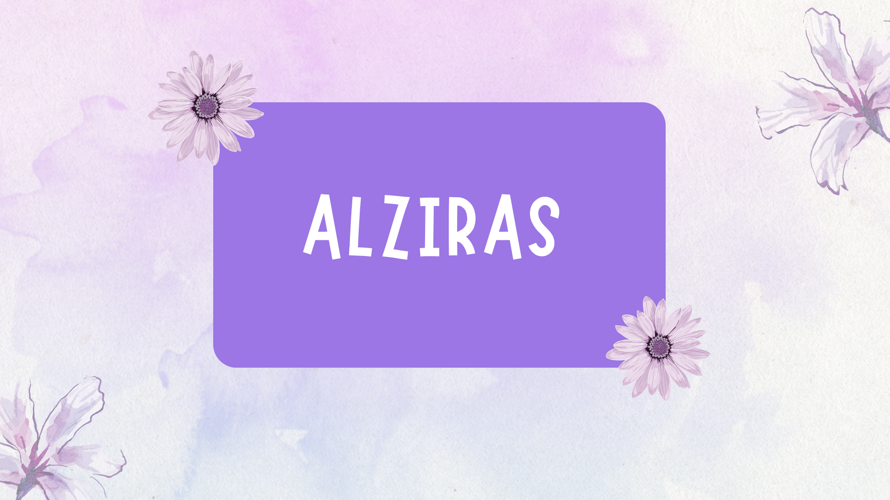

Em 1929, em Lajes, no interior potiguar, Alzira Soriano de Nóbrega tornou-se a primeira prefeita eleita na América Latina. Quase um século depois, sua trajetória ainda inspira uma pergunta urgente: por que as mulheres continuam sub-representadas nos espaços de decisão política?
O Portal Alziras nasce para responder a essa pergunta com dados, memória e ação. O projeto é desenvolvido por Márcia Regina Miranda Clementino Medeiros, no âmbito do Mestrado em Ciência, Tecnologia e Inovação da UFRN — turma especial financiada pela Justiça Federal do Rio Grande do Norte (JFRN), exclusiva para servidores do Poder Judiciário Federal do estado - sob orientação da Profa. Dra. Zulmara Virgínia de Carvalho e coorientação do Prof. Dr. Henrique Rocha de Medeiros, com o apoio institucional do Tribunal Regional Eleitoral do Rio Grande do Norte (TRE-RN) e do seu laboratório de inovação, o Alzira Inova.
A iniciativa conta com o financiamento do projeto de extensão PJ678-2026 — Ecossistema de Inovação Social Alziras, que teve fomento do programa Institucional de Extensão na Pós-graduação (PROEXT-PG/UFRN), por meio do EDITAL Nº 013/2025-UFRN/PROEX, com a participação da bolsista de extensão Letícia Silva Torres, e com o desenvolvimento tecnológico do portal a cargo da bolsista Ana Clara de Almeida Cabral, vinculada ao PIBIC/CNPq (IC) no âmbito do projeto de pesquisa PVJ17901-2020 — Desenvolvimento de Soluções Tecnológicas Inovadoras para Produtos, Serviços e Processos.
O Portal Alziras reúne informações, indicadores e conteúdos educativos sobre a presença feminina na política potiguar — um convite para conhecer o passado, compreender o presente e construir, juntas, um futuro de maior representatividade democrática.
Destaques
Projetos que valorizam a história da primeira prefeita eleita da América Latina e a participação feminina na política.
Portal Alziras
O Portal Alzira Soriano foi desenvolvido para valorizar a história da primeira mulher eleita prefeita do Brasil e destacar a importância da participação feminina na política.
Saiba maisAlzirômetro
O Alziromêtro é o painel interativo do Projeto Alziras com dados sobre a aplicação dos recursos destinados à promoção da participação feminina na política do Rio Grande do Norte.
Saiba maisAlzira Soriano
Foi a primeira mulher eleita prefeita no Brasil e na América Latina, em 1928, na cidade de Lajes, no Rio Grande do Norte. Sua trajetória marcou a luta pela participação feminina na política, tornando-se um símbolo de coragem, liderança e representatividade para as mulheres brasileiras.
A importância de Alzira Soriano permanece atual por representar a luta das mulheres por espaço e igualdade na política. Sua história inspira a participação feminina em cargos de liderança e reforça a importância da representatividade das mulheres nas decisões da sociedade.

Nossos Objetivos
Representatividade
O site busca valorizar a presença feminina na política e mostrar a importância das mulheres em espaços de liderança.
Igualdade
O portal incentiva a construção de uma sociedade mais justa, com oportunidades iguais para homens e mulheres.
Inspiração
A história de Alzira Soriano serve como exemplo e motivação para novas gerações de mulheres líderes.
Visão Geral das Eleições de 2024
Apoio


Contato
Entre em contato com o Projeto Alziras pelo e-mail ou siga nossas redes sociais.